Ciao, sono Edoardo.
Sono un UX/UI designer con radici nel product design. Questo mi porta a progettare interfacce con un approccio concreto: non solo estetica, ma logica, funzione ed esperienza. Ogni schermata per me deve avere un ruolo preciso: orientare, semplificare e rendere l'interazione più naturale possibile.
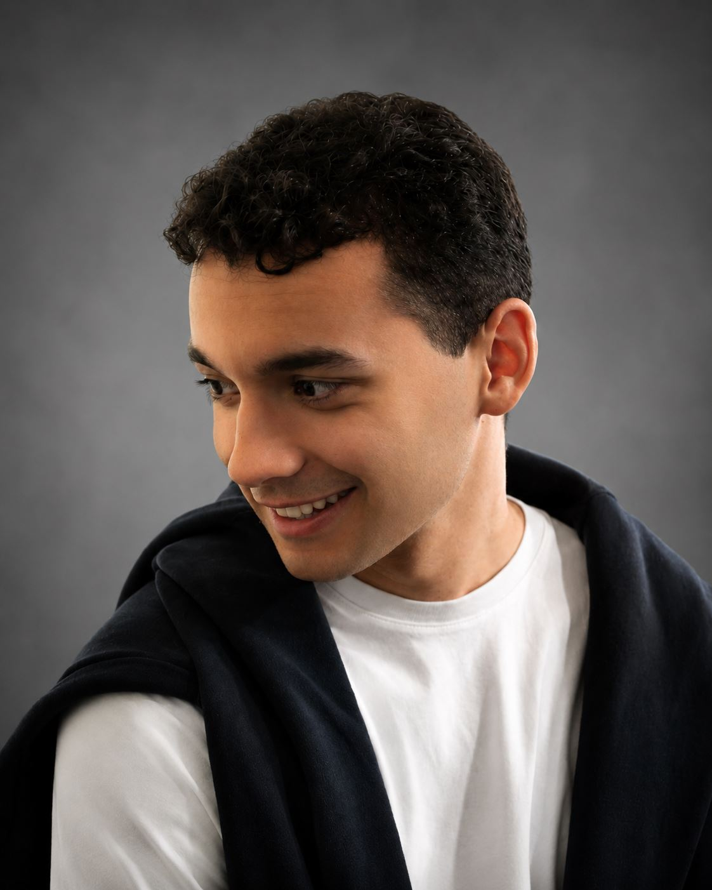
Cosa so fare
Mi piace partire dalle domande giuste, osservare le persone, leggere i contesti e trasformare gli insight in soluzioni semplici, chiare e utilizzabili.
La mia cassetta degli attrezzi passa da Figma e Miro per progettare esperienze digitali, ad Adobe Suite e Canva per costruire visual e presentazioni efficaci, fino a Rhinoceros 3D e Blender, che mi hanno insegnato una sensibilità più fisica, legata alle forme e ai dettagli.
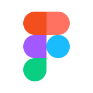
Figma- Miro
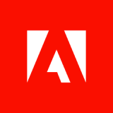
Adobe Suite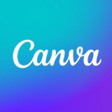
Canva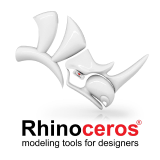
Rhinoceros 3D- Blender
L'AI lavora con me, non al posto mio
Nella ricerca uso ChatGPT e Perplexity per benchmark, personas, scenari simulati e sintesi dei dati.
Con Claude e Antigravity porto le idee in prototipi in codice che funzionano davvero, come in WIS Home Agent.
- ChatGPT
- Perplexity
- Claude
- Antigravity
Prima capisco, poi disegno
Nel processo progettuale parto sempre dal capire: user research, interviste, desk research e benchmark analysis per trovare bisogni reali, comportamenti e opportunità.
Da lì costruisco personas, customer journey, wireframe e prototipi, fino a testare le soluzioni con l'usability testing per capire cosa funziona davvero e cosa si può migliorare.
Le soft skill? Le metto in pratica più che dichiararle:
- Curiosità, per fare domande migliori
- Senso critico, per non fermarmi alla prima idea
- Precisione, per curare i dettagli
- Costanza, per portare avanti il progetto
- Ottimismo, per affrontare gli imprevisti
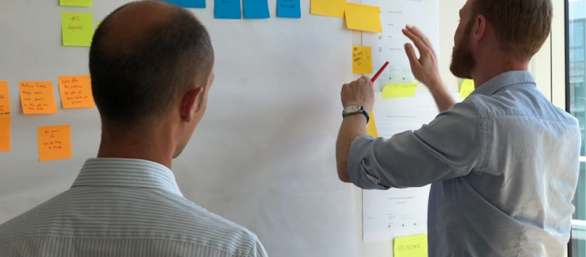
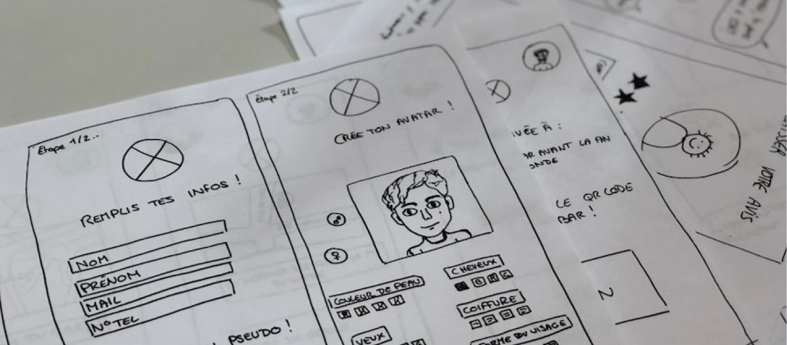
Dove ho studiato e lavorato
Dal product design al Politecnico di Torino all'UX/UI a Milano, con una parentesi di fashion design all'Accademia Albertina: lo stesso metodo, prima per gli oggetti e poi per gli schermi.
-
2026
Master Full-Time in UX & UI Design for Digital Product
Talent Garden Innovation School, Milano
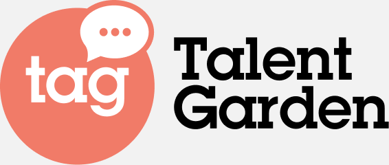
-
2021 – 2025
Laurea triennale in Design e Comunicazione (Product Design)
Politecnico di Torino, Dipartimento di Architettura e Design
-
2023 – 2024
Corso di fashion design
Accademia Albertina di Belle Arti, Torino, durante la triennale. Da qui è nata la collezione di foulard Torino Icons.
-
2024
Junior Product Designer, tirocinio
MAT Studio di Matteo Tampone: ricerca brevettuale, una sedia in plastica riciclata e i totem fotografici per gli hotel torinesi durante le ATP Finals.
Oltre al design, cosa mi piace?
Mi piace muovermi: correre, allenarmi, giocare a calcio. Lo sport mi insegna a restare costante, a migliorare passo dopo passo e a non fermarmi alla prima difficoltà.
La cucina è il mio lato più creativo e generoso. Amo il momento in cui un'idea diventa un piatto, ma la vera soddisfazione è vedere chi mangia stare bene e sentirsi accolto. Un buon piatto, come una buona interfaccia, funziona quando è pensato per chi lo vive.
Il cinema è la mia pausa intelligente. Non guardo solo cosa succede, ma come viene raccontato: fotografia, inquadrature, dialoghi, ritmo e atmosfera sono ciò che rende un film memorabile.
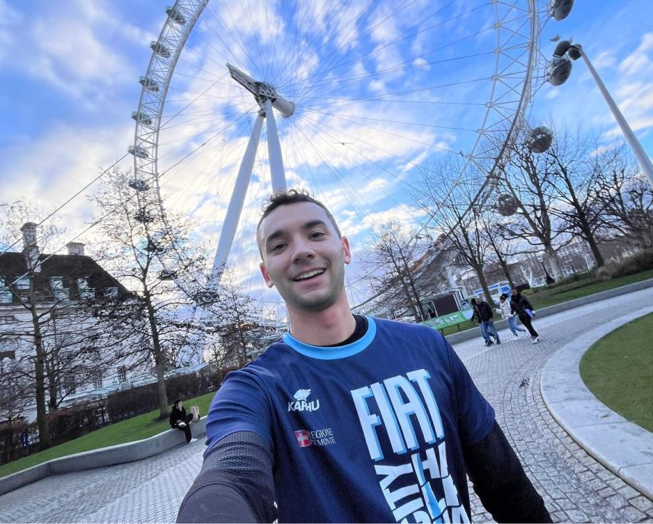
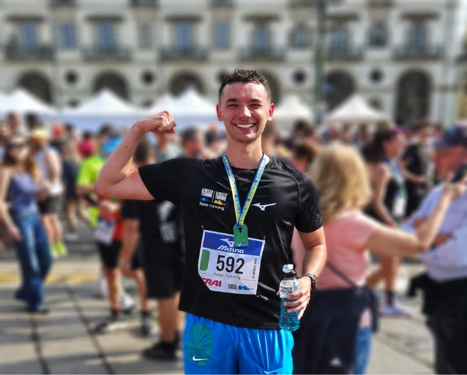
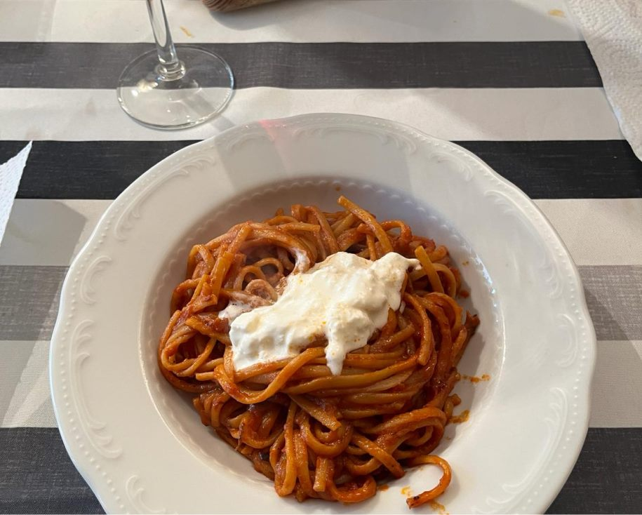
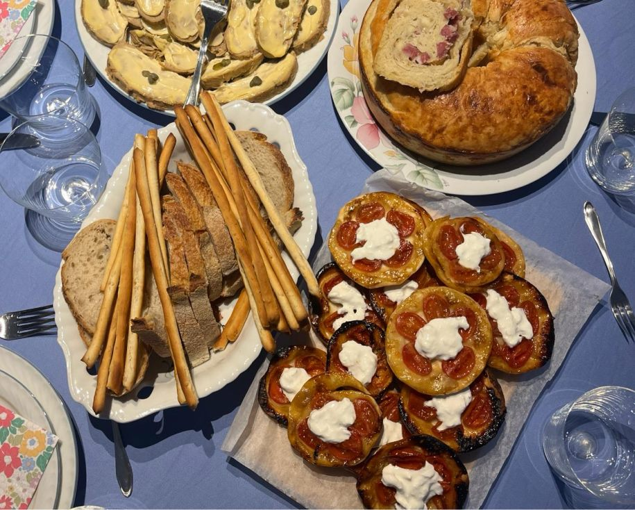
Parliamo del tuo prossimo progetto
Hai una posizione aperta o un'idea da sviluppare? Scrivimi due righe.
Si apre la tua app di posta con il messaggio già pronto. Oppure scrivi a email